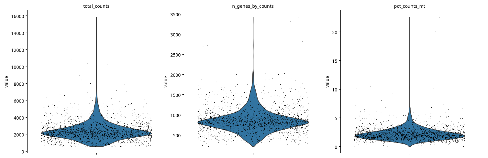
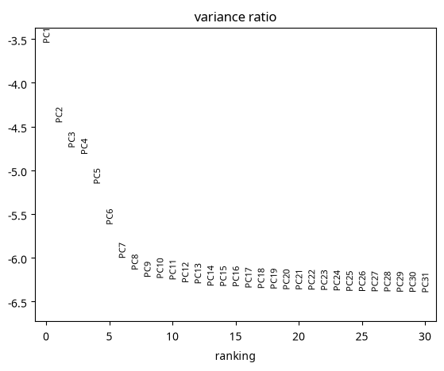
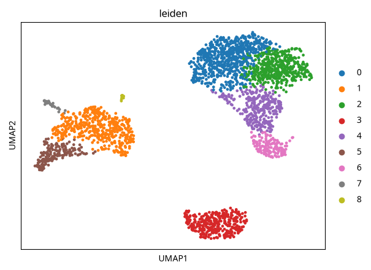

scRNA-seq Basics
Nasir Mahmood Abbasi, PhD
Bioinformatics Educator

This walkthrough takes a filtered 10x feature-barcode matrix from input checks through cell-level QC, normalization, PCA, neighbor graphs, clustering, and UMAP. It gives parallel Seurat and Scanpy examples; it does not claim that one set of QC thresholds fits every tissue.
Format: Hands-on lab. Learners with basic R or Python experience will run one of two QC-to-clustering workflows on the public PBMC 3k matrix; commands below stage the input locally, and the analysis scripts are provided.
Learning objectives and prerequisites
Learning objectives. After completing this tutorial, you will be able to:
- Perform rigorous quality control (QC) on a 10x Genomics single-cell RNA-seq (scRNA-seq) count matrix.
- Normalize and identify highly variable genes (HVGs).
- Compute PCA and choose components for downstream analysis using an elbow plot and heuristic checks.
- Generate 2D embeddings (UMAP) and perform graph-based clustering (Leiden or Louvain).
- Interpret QC metrics and common failure modes, and make principled adjustments to thresholds based on biology.
Prerequisites. You should be comfortable with the Linux command line, basic R or Python, count matrices and gene identifiers, and introductory statistics. Install either Seurat in R or Scanpy in Python before running its script. The Python example also needs Scanpy's scikit-misc optional dependency for the seurat_v3 highly-variable-gene flavor and an available Leiden backend for clustering; version-specific installation details are maintained in the official documentation. The next section provides a download and extraction command for the public PBMC 3k archive. Capture your environment versions with sessionInfo() in R or python -c "import scanpy; print(scanpy.__version__)" in Python.
Why this matters: biological and computational context
Single-cell RNA sequencing measures RNA molecules captured in individual barcodes. A barcode can represent a cell, an empty or background droplet, or more than one cell. Cell-level QC helps identify unusual libraries, but gene-count and mitochondrial metrics alone cannot distinguish every low-quality cell from a real rare or activated population. Keep the distributions and biological context in view when filtering.
Two widely used toolkits for scRNA-seq are Seurat (R) and Scanpy (Python). This tutorial provides parallel example commands for both, so you can reproduce the pipeline in your preferred environment. The workflow is demonstrated on the 10x Genomics PBMC 3k dataset as a pedagogical example; the same principles apply to other datasets, but thresholds should be adapted to your tissue and experimental protocol.
Required files and workspace
The official Seurat PBMC 3k tutorial links a public archive from 10x Genomics. From the tutorial project root, stage its legacy matrix.mtx, barcodes.tsv, and genes.tsv files at the expected path (the archive extracts under filtered_gene_bc_matrices/hg19/):
mkdir -p data/pbmc3k
curl -L --fail --output /tmp/pbmc3k_filtered.tar.gz https://cf.10xgenomics.com/samples/cell/pbmc3k/pbmc3k_filtered_gene_bc_matrices.tar.gz
tar -xzf /tmp/pbmc3k_filtered.tar.gz -C data/pbmc3k
mv data/pbmc3k/filtered_gene_bc_matrices/hg19 data/pbmc3k/filtered_feature_bc_matrix
ls -lh data/pbmc3k/filtered_feature_bc_matrixThe Scanpy reader recognizes the legacy genes.tsv layout; for current Cell Ranger v3+ input, use the features.tsv.gz layout documented by Scanpy read_10x_mtx. Do not rename files to disguise a different layout. The Scanpy example selects gene-expression features; for multimodal matrices, inspect feature types and select the intended assay.
data/pbmc3k/filtered_feature_bc_matrix/contains the extracted legacy matrix withbarcodes.tsvandgenes.tsv; for Cell Ranger v3+ use the matching compressedfeatures.tsv.gzlayout.- For R: you will create an R object file
results/pbmc_seurat.rds. - For Python: you will create AnnData files
results/pbmc_scanpy.h5adand intermediate figures inresults/figures/.
Reproducible sequential workflow
Seurat (R) workflow
# R script: scripts/01_seurat_qc_clustering.R
# Input: data/pbmc3k/filtered_feature_bc_matrix/
# Output: results/pbmc_seurat.rds and figures saved to results/figures/
library(Seurat) # v4/5
library(patchwork) # for arranging plots (optional)
dir.create("results/figures", recursive = TRUE, showWarnings = FALSE)
# 1) Load 10x data
pbmc.data <- Read10X(data.dir = "data/pbmc3k/filtered_feature_bc_matrix/")
pbmc <- CreateSeuratObject(counts = pbmc.data, project = "pbmc3k", min.cells = 3, min.features = 200)
# 2) Compute percent mitochondrial reads (human: genes starting with MT-)
pbmc[["percent.mt"]] <- PercentageFeatureSet(pbmc, pattern = "^MT-")
# 3) Visualize QC metrics and choose thresholds
png("results/figures/qc_violin.png", width=1200, height=400)
VlnPlot(pbmc, features = c("nFeature_RNA", "nCount_RNA", "percent.mt"), ncol = 3)
dev.off()
# 4) Example filtering (adjust thresholds to your experiment)
message("Cells before QC filters: ", ncol(pbmc))
pbmc <- subset(pbmc, subset = nFeature_RNA > 200 & nFeature_RNA < 2500)
message("After gene-count filters: ", ncol(pbmc))
pbmc <- subset(pbmc, subset = percent.mt < 5)
message("After mitochondrial filter: ", ncol(pbmc))
# 5) Normalize, find variable features, scale
pbmc <- NormalizeData(pbmc, normalization.method = "LogNormalize", scale.factor = 10000)
pbmc <- FindVariableFeatures(pbmc, selection.method = "vst", nfeatures = 2000)
pbmc <- ScaleData(pbmc, features = VariableFeatures(pbmc))
# 6) PCA
pbmc <- RunPCA(pbmc, features = VariableFeatures(pbmc))
png("results/figures/pca_elbow.png", width=800, height=600)
ElbowPlot(pbmc, ndims = 50)
dev.off()
# 7) Neighbors, clustering, UMAP (replace with dimensions chosen after PCA inspection)
pcs <- 1:10
pbmc <- FindNeighbors(pbmc, dims = pcs)
pbmc <- FindClusters(pbmc, resolution = 0.5) # Louvain default; Leiden (algorithm = 4) needs its documented dependency
pbmc <- RunUMAP(pbmc, dims = pcs)
png("results/figures/umap_clusters.png", width=800, height=600)
DimPlot(pbmc, reduction = "umap", label = TRUE)
dev.off()
# 8) Save object
saveRDS(pbmc, file = "results/pbmc_seurat.rds")
The R script writes plots under results/figures/ and saves the filtered Seurat object at the stated RDS path. The 200/2,500-gene and 5% mitochondrial examples are starting values shown for illustration, not a PBMC result or recommended universal cutoff. Inspect your own distributions before filtering.
What each command produces:
VlnPlotfigure for per-cell QC distributions (nFeature_RNA = number of genes detected per cell, nCount_RNA = UMI counts, percent.mt = fraction of mitochondrial reads).- Subsetted Seurat object with filtered cells (the subset call produces a smaller in-memory object).
ElbowPlotsaved as PNG for choosing the number of PCs.- UMAP plot and saved Seurat object
results/pbmc_seurat.rds.
Scanpy (Python) workflow
# Python script: scripts/01_scanpy_qc_clustering.py
# Input: Cell Ranger filtered 10x MEX directory (gene-expression features)
# Output: results/pbmc_scanpy.h5ad and figures in results/figures/
import os
import scanpy as sc
os.makedirs("results/figures", exist_ok=True)
sc.settings.figdir = "results/figures"
# Read 10x MEX files; v3+ compressed filenames are expected by default.
adata = sc.read_10x_mtx(
"data/pbmc3k/filtered_feature_bc_matrix/",
var_names="gene_symbols",
cache=True,
gex_only=True,
)
adata.var_names_make_unique()
# Identify mitochondrial genes using the naming convention in this reference.
# Change the prefix/case rule if your feature annotation uses another convention.
adata.var["mt"] = adata.var_names.str.upper().str.startswith("MT-")
sc.pp.calculate_qc_metrics(adata, qc_vars=["mt"], percent_top=None, inplace=True)
sc.pl.violin(
adata,
["total_counts", "n_genes_by_counts", "pct_counts_mt"],
jitter=0.4,
multi_panel=True,
save="_qc_violin.png",
)
# Example filters only: inspect distributions and choose criteria for this sample.
print(f"Cells before QC filters: {adata.n_obs}")
adata = adata[adata.obs["n_genes_by_counts"] > 200].copy()
print(f"After lower gene-count filter: {adata.n_obs}")
adata = adata[adata.obs["n_genes_by_counts"] < 2500].copy()
print(f"After upper gene-count filter: {adata.n_obs}")
adata = adata[adata.obs["pct_counts_mt"] < 5].copy()
print(f"After mitochondrial filter: {adata.n_obs}")
# Preserve count values because seurat_v3 HVG selection expects counts.
adata.layers["counts"] = adata.X.copy()
sc.pp.normalize_total(adata, target_sum=1e4)
sc.pp.log1p(adata)
adata.raw = adata.copy() # log-normalized expression before restricting to HVGs
sc.pp.highly_variable_genes(
adata, n_top_genes=2000, flavor="seurat_v3", layer="counts"
)
adata = adata[:, adata.var.highly_variable].copy()
sc.pp.scale(adata, max_value=10)
# Inspect the variance plot, then use the same selected PC range below.
sc.tl.pca(adata, svd_solver="arpack")
sc.pl.pca_variance_ratio(adata, log=True, save="_pca_elbow.png")
sc.pp.neighbors(adata, n_neighbors=10, n_pcs=10) # adjust n_pcs after inspection
sc.tl.leiden(adata, resolution=0.5)
sc.tl.umap(adata)
sc.pl.umap(adata, color=["leiden"], save="_umap_clusters.png")
adata.write("results/pbmc_scanpy.h5ad")
What each command produces:
- QC violin plots saved under
results/figures/for visual threshold selection. - Filtered AnnData object
results/pbmc_scanpy.h5adthat contains expression, computed metrics, and cluster labels. - PCA variance ratio figure to help pick the number of components.
- UMAP and cluster plots saved as image files.
Tested worked example: public PBMC 3k
The Python workflow above was executed twice, unchanged, on the public 10x Genomics healthy-donor PBMC 3k matrix. The archive download and staging succeeded; both analysis runs completed from matrix loading through QC, normalization, highly variable gene selection, PCA, neighbors, Leiden clustering, UMAP, and the saved AnnData object. The input contained 2,700 cells and 32,738 genes. No thesis data or tumor results were used.
Tested environment: Linux, Python 3.12.3, Scanpy 1.11.5, scikit-misc 0.5.2, igraph 0.11.9, and leidenalg 0.10.2. The reproducible Scanpy download includes the exact published script, staging commands, complete package lock, input checksums, checkpoints, and both run logs. Use its README to create a fresh environment and reproduce the outputs.
Follow the cells through the example filters
| Checkpoint | Cells retained |
|---|---|
| Input matrix | 2,700 |
| More than 200 detected genes | 2,700 |
| Fewer than 2,500 detected genes | 2,695 |
| Mitochondrial-count percentage below 5 | 2,638 |
The example removed 5 cells at the upper gene-count filter and another 57 at the mitochondrial filter: 62 removed and 97.70% retained. These numbers are checkpoints for this archive and the shown parameters, not a target retention rate or proof that the filters are biologically optimal. Inspect distributions and the removed cells before adopting the same criteria for another sample.

QC before filtering. Each dot is an input cell. The bulk of this sample has fewer than 2,500 detected genes and less than 5% mitochondrial counts, with small upper tails. This view supports inspecting the sample; it does not diagnose doublets or validate universal cutoffs. Generated by the unchanged Python script from the public 10x PBMC 3k matrix, not a thesis or tumor dataset.

PCA diagnostic. The script computes 50 components and uses the first 10 to build its neighbor graph. That choice was executed as written, not independently optimized for this sample. Inspect variance decay and marker or covariate relationships when choosing components. This is output of the public PBMC run.

Clustering output, not cell-type validation. The unchanged script produced nine Leiden groups at resolution 0.5. Group numbers are computational labels; even the small groups require marker and technical-covariate review. No cell-type annotation, doublet calling, or clinical validation was performed. UMAP axes and gaps should not be read as calibrated biological distances.
Check the saved object, not just the pictures
The output results/pbmc_scanpy.h5ad was reopened and checked: 2,638 cells, 2,000 highly variable genes, finite PCA and UMAP coordinates, a cell-by-cell neighbor graph, and a Leiden label for every retained cell. In this script, .X contains scaled HVG expression, .layers["counts"] holds count values for those HVGs, and .raw holds log-normalized expression for all 32,738 genes. Despite its name, .raw is not untransformed counts here.
The two runs retained the same cells and genes and produced identical Leiden labels and UMAP coordinates in this pinned environment. The tested Scanpy functions use default random_state=0; matching seeds alone does not establish reproducibility across versions or platforms. Plotting warnings about a noninteractive backend and scaling a sparse matrix were recorded, as was the future Leiden-backend warning. The supplied download retains the full logs rather than suppressing those warnings.
Scope of verification: only the Scanpy/Python route was executed. The Seurat/R route has not been run in this verification. This is a public count-matrix-to-clustering exercise, not raw-read processing, biological validation of all tutorial thresholds, or evidence that all 58 lessons have been run end to end.
Data source: 10x Genomics PBMC 3k filtered matrix, hg19 legacy layout; see Scanpy's public dataset description. The tested archive's SHA256 is recorded in the download.
![Two views of the same UMAP embedding of Arabidopsis root cells, with axes UMAP1 and UMAP2. Each point is a cell. The left panel, titled “leiden,” colors cells by clusters 0–12; these numbers are cluster identifiers, not cell-type names. The right panel, titled “batch” in the source, colors short-root mutant cells (shr) purple and wild-type cells (wt) red; these labels identify biological genotypes, not technical batches. This is a separate public example, not an output of the OmicsHub PBMC workflow.](../images/tutorial-figures/public-plant-clusters.png)
Each point represents one cell. The left panel colors cells by Leiden cluster; the right panel colors the same cells by genotype. In the source figure, “batch” refers to short-root mutant (shr) and wild type (wt), not technical batches.
This public Arabidopsis root example is separate from the PBMC workflow above.
Source: Analysis of plant scRNA-Seq Data with Scanpy, Galaxy Training Network.
License: CC BY 4.0; image unchanged.
Data: GSE123818 (Denyer et al., 2019).
Output inspection and interpretation
At each stage inspect both numeric summaries and visual diagnostics. Key places to look and how to interpret them:
- QC violin plots: Compare detected genes per cell, total UMI counts, and mitochondrial-count percentage. Low values can flag low-complexity barcodes; high gene or count values can flag possible multiplets. These patterns are prompts for review, not diagnoses.
- Mitochondrial fraction (
percent.mtin Seurat;pct_counts_mtin Scanpy): A high fraction can accompany stressed or damaged cells, while mitochondria-rich cell types may be expected in some tissues. Interpret the distribution against tissue, protocol, and annotation. Neither one cutoff nor a high sample-wide median proves a preparation problem. - Retention after QC: Record how many barcodes remain at each filtering step and inspect which cells were removed. There is no universal target retention fraction; unusually large losses warrant checking paths, metric definitions, and thresholds. Each script prints the starting cell count and the retained count after each filter. Counts depend on the input and chosen cutoffs; treat them as a run checkpoint, not fixed expected biological results. If a checkpoint is zero or unexpectedly drops sharply, stop before normalization and inspect the input path, QC distributions, and threshold units.
- Elbow plot / PCA variance: The "elbow" shows when additional PCs explain diminishing variance. Use the elbow as a guide (e.g., 10–30 PCs) but also inspect biological interpretability: do clusters separate only when you include more PCs? Visualize marker genes across PCs when uncertain.
- UMAP/clustering: UMAP is a visualization and not a clustering algorithm. If cluster separations are weak in UMAP, check whether the clustering is driven by technical covariates (sequencing depth, percent.mt) by coloring UMAP by those metrics.
How to read the result without over-interpreting it:
- Finding discrete clusters that correspond to known immune cell types (e.g., T cells, B cells, monocytes) is consistent with expected biology in PBMC samples. This supports the claim that clusters are distinct cell types, but does not prove it; validation with marker genes and orthogonal assays (flow cytometry, CITE-seq surface markers) strengthens conclusions.
- Detecting a small cluster with high n_genes and n_counts might indicate doublets but could also be a biologically large or activated cell type. Do not automatically remove such clusters without checking marker expression.
- A visually separated UMAP is neither necessary nor sufficient evidence of biological validity: batch effects, normalization artifacts, or inappropriate gene selection can create misleading visual separation. Validate the analysis with markers, technical-covariate checks, and relevant biological evidence.
Troubleshooting
Common symptoms, likely causes, and practical fixes:
- Symptom: Very low median genes/cell and many cells with zero or very few genes.
Likely causes: Using the raw (unfiltered) matrix that includes ambient RNA, degraded sample, or wrong file path leading to an empty object.
Fixes: Confirm the input files (matrix.mtx, barcodes.tsv) are present and non-empty. Use the 10x filtered matrix if intended. Check sample QC at the wet-lab stage. - Symptom: High fraction of mitochondrial reads across most cells.
Likely causes: Cell lysis during dissociation, poor viability, or sequencing of RNA from dying cells.
Fixes: Re-examine experimental protocol; increase mito cutoff if cells are known to be mitochondrial-rich (e.g., muscle), but document the rationale. Consider removing cells with extreme percent.mt values and check downstream impact. - Symptom: Clusters correlate with n_counts or percent.mt rather than biological markers.
Likely causes: Technical variation dominating the signal (batch effects, library size differences).
Fixes: Regress out technical covariates during scaling (e.g., scale.data with vars.to.regress in Seurat) or apply batch-correction tools (Harmony, Seurat IntegrateData, Scanpy’s combat/regress) when appropriate. - Symptom: Too many small clusters or over-clustering.
Likely causes: High clustering resolution or too many PCs with noise.
Fixes: Lower clustering resolution (e.g., from 1.0 to 0.4), reduce number of PCs, or merge clusters based on marker gene expression. - Symptom: No clear elbow in PCA variance plot.
Likely causes: Gradual decay of variance due to continuous biological gradients or high noise.
Fixes: Use alternative criteria (JackStraw in Seurat, permutation tests, or look at PC loadings and marker genes) and combine with biological knowledge.
Limitations, version and reference-data caveats, and responsible-use notes
Limitations and caveats to remember:
- Tool versions matter. Seurat and Scanpy APIs and defaults change between major releases; scripts should pin package versions or be run in a reproducible environment (container or conda environment). Record the exact package versions used when producing results.
- Reference genomes and gene identifiers: 10x datasets can be aligned to different references (hg19, GRCh38). Gene name prefixes (e.g., MT- vs mt-) vary; pattern matching for mitochondrial genes must reflect your annotation source.
- Thresholds (percent.mt, gene/UMI cutoffs, number of PCs, clustering resolution) are dataset- and biology-specific. Default tutorial values are starting points, not universal rules. For disease contexts (e.g., tumors), many canonical thresholds are inappropriate and can remove biologically relevant populations.
- UMAP uses a stochastic algorithm. Record random seeds, toolkit versions, and graph parameters; the tested Scanpy 1.11.5 workflow uses the default random state of 0. Identical seeds do not guarantee matching embeddings across software versions or platforms.
- Ethical/responsible use: scRNA-seq from human samples may contain personally identifiable information in metadata. Follow data-use agreements and IRB guidance for controlled-access datasets.
Next-step checklist (concise)
- Confirm input files:
data/pbmc3k/filtered_feature_bc_matrix/contains valid 10x files. - Run the provided R or Python script and inspect saved figures in
results/figures/. - Adjust QC thresholds based on violin plots and biological expectations; re-run filtering if needed.
- Decide on number of PCs using ElbowPlot and biological tests (marker separation); recompute neighbors and clustering if you change PCs.
- Annotate clusters with marker genes, and validate with orthogonal data where available.
- Record software versions, random seeds, and input file checksums for reproducibility.
References
Author: Nasir Mahmood Abbasi, PhD - Category: Single-Cell RNA-seq